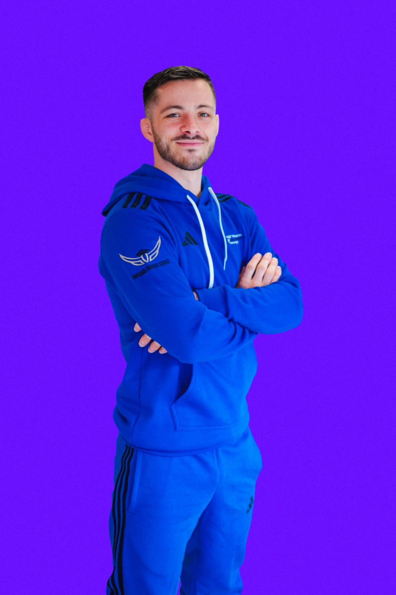
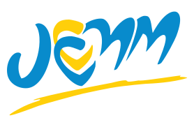
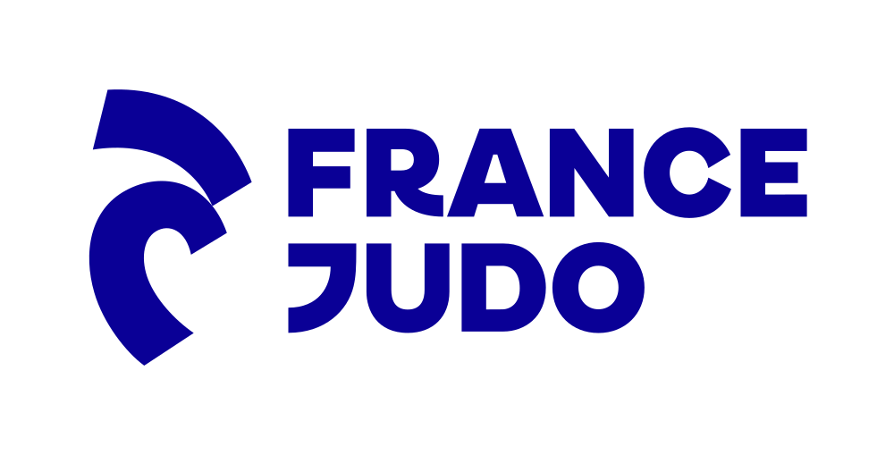
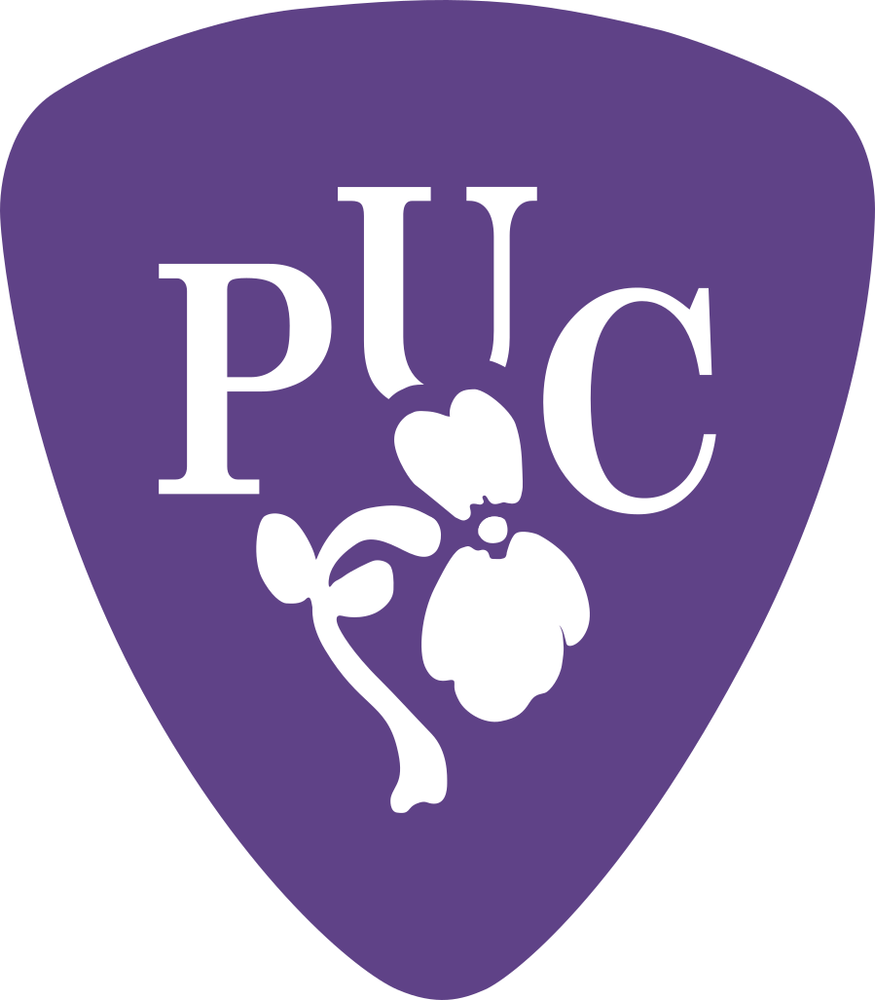
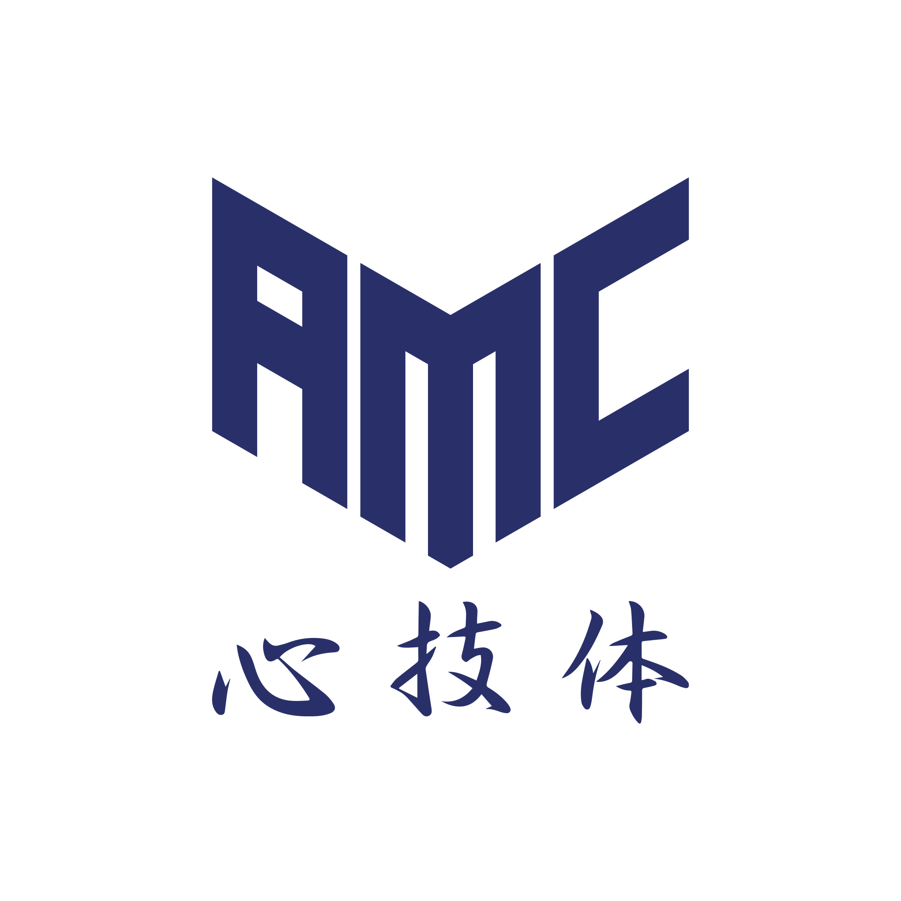
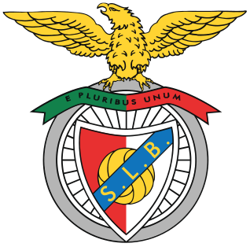
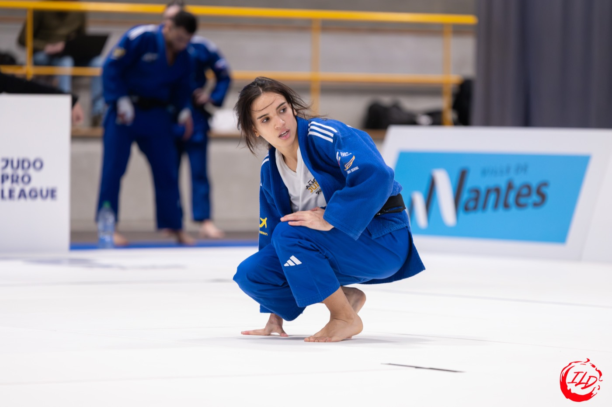
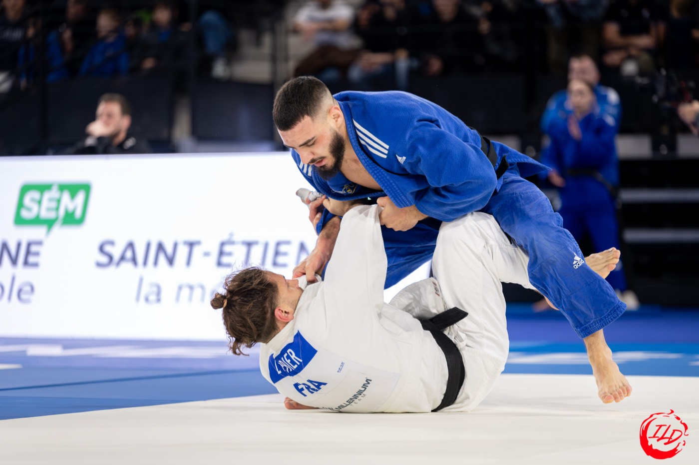

Projet Personnel & Individuel

Le judo est un sport que j'aime transmettre.
Coach, c'est former les jeunes et guider les plus prometteurs vers le très haut niveau — sur le terrain, chaque jour.
Le judo ne se limite plus à la performance sportive : il faut aussi structurer, innover, développer. Je ne conçois pas le développement sans le terrain, ni la performance sans un projet clair.
Ce dossier (PPI) retrace mon parcours pour en révéler la cohérence avec le métier que je vise.
Me comprendre avant de me projeter.
Trois tests, un même profil : exigence, idéalisme, perfectionnisme.
Test 1 — MaRéussite
Le sentiment qu'il faut être « parfait » pour être aimé, avec quatre effets : excellence, renonciation, procrastination, insatisfaction. Je repère vite les imperfections et peux paraître critique.
Test 3 — 16Personalities
LOGISTICIEN — INTP-A
Curieux, analytique, autonome. J'excelle dans l'analyse et les solutions originales — mais j'ai du mal avec la routine et les cadres rigides.
Mes traits — 16Personalities
Test 2 — BigFive, les cinq grands traits
Organisation très basse (7/20) : l'une des clés de ma procrastination.
« Penser un peu plus à moi, tout en restant exigeant avec mes projets et mes jeunes. »
Un penseur animé par un idéal de perfection. Trois leviers pour m'épanouir : accepter l'imperfection (80% plutôt que 100%), accepter mes émotions réelles, choisir des environnements qui respectent mon autonomie.
Coach, designer, chef de projet.
27 ans, coach de judo au JCCMM, chef de projet digital, futur entraîneur au SL Benfica.
Ma couleur : le violet
Créativité et technologie — les deux moteurs qui relient le coach, le communicant et l'innovateur. C'est la couleur de ce document, et de ce site.
Mes postes
DQN Design
2020 → 2022 · nom commercialMon auto-entreprise de design (identités visuelles, supports de com, affiches) — aujourd'hui mise entre parenthèses pour me consacrer au judo.




+ Judo Club Leforest · Eudémonis · Ateliers de la Ruche · US Alfortville · Judo at School · Crossfit LXII · Rounds
Vingt-deux ans, une méthode.
Du Pas-de-Calais à Lisbonne.
Onze étapes. Dès la sixième, internat à 100 km de chez moi. J'ai 11 ans.
Leforest (62), judo depuis 2004. Très vite, un cadre de construction personnelle plus qu'un loisir : la performance se joue dans les détails et la régularité.
Pôle Espoirs de Tourcoing à 15 ans + Bac ES en internat. Journées millimétrées : j'apprends à hiérarchiser et anticiper.
Suivi des jeunes, relais internat/entraîneurs, premiers visuels de communication. Je découvre PhotoFiltre puis Photoshop.
Trois semaines de travail manuel en 2017 pour financer un voyage au Japon. Un choc de réalité sur le lien effort-résultat.
Amphis et cours magistraux ne me correspondent pas — formé dans l'action, sur le tatami. Réorientation lucide vers le web design.
Titre RNCP Concepteur de Sites Web, mention Bien. Juillet 2020 : création de DQN Design — j'entre dans l'entrepreneuriat.
BPJEPS (2021) puis DEJEPS à la Dojo Academy — 1ère promotion, non validé pour raisons personnelles mais étape structurante.
Professeur au groupe scolaire Fénelon Sainte-Marie (4-18 ans). L'expérience me révèle ce que je recherche : du haut niveau, de l'ambition.
Depuis 2024, Responsable Cadets HN & Chargé Com./Développement. 4 médailles nationales, 3 renforts internationaux recrutés en République Tchèque, MyJCCMM conçu et déployé.
Titre Manager du Développement Commercial. Mémoire : « Pourquoi le judo doit-il se réinventer pour se professionnaliser ? »

BenficaCourt terme : coach au Portugal. D'ici 3-4 ans : direction technique ou sportive. Projet ultime : une entreprise entre sport et digital.
Mes résultats au JC Chilly-Mazarin Morangis
| Athlète | Compétition | Résultat |
|---|---|---|
| A. Hamdaoui | France 1ère Div. Cadets | Argent |
| D. Hamdaoui | France 1ère Div. Cadets | Bronze |
| A. Hamdaoui | Europe Cadets / FOJE | 5ème (x2) |
| M. Berthélémy | France 1ère Div. Cadets | Or |
| L-R. Labiaux | France 1ère Div. Cadets | Bronze |
| M. Berthélémy | European Cup Thessalonique | Or |
| L-R. Labiaux | European Cup Thessalonique | Bronze |
| Équipe | France par Équipes Cadets | Argent |
Trois métiers, reliés.
Judo, DQN Design, gestion de projet — un même ADN.
Radar de compétences
Auto-évaluation, sur 10
Compétences clés
Hard skills
Adobe Creative Cloud, Figma, Sketch, WordPress, Notion, Office, Base44, Claude.
Soft skills
Ma valeur ajoutée
Je relie trois compétences rarement réunies : encadrement de haut niveau, création digitale, gestion de projet.
Une lecture honnête de moi-même.
Forces
- Exigence, sens du travail bien fait
- Profil hybride : haut niveau + digital + management
- Convaincre, recruter, fédérer
- Autonomie et innovation numérique
- Résilience face au refus
Faiblesses
- Procrastination si peu intéressé
- Perfectionnisme qui freine l'action
- Difficulté à exprimer mes émotions
- Manque d'autopromotion
- DEJEPS non validé
Opportunités
- SL Benfica : international, haut niveau
- Réseau tchèque déjà amorcé
- Mastère en cours
- Judo à professionnaliser (mon mémoire)
- Direction de club à terme
Menaces
- Langue et nouvelle culture sportive
- Incertitudes du projet à l'étranger
- Dépendance aux écosystèmes fédéraux
- Marché du judo peu professionnalisé
- Équilibre terrain / vie personnelle
Choisir le terrain, choisir l'international.
France, stable — ou l'étranger, en très haut niveau. J'ai choisi de partir.
Entraîneur au SL Benfica
Cadets et Juniors vers l'international.
Direction sportive
Coach Séniors HN, académies.
Entr. National / CTF
Ou entreprise sport & digital.
Étude de marché : le judo en France


Ancrage francilien historique (siège fédéral, INSEP, Institut du Judo). La Judo Pro League réunit 18 clubs, dont mon club le JCCMM.
Positionnement & concurrence
La plupart des concurrents excellent sur un seul axe. Moi, je relie coach diplômé, créateur d'outils numériques et management du sport.
Ma différenciation
Pas le meilleur sur un seul terrain — mais l'un des rares à les relier tous.
SL Benfica — la candidature
Message direct sur Instagram → entretien en anglais le 31 mars 2026 (Teams puis WhatsApp) avec Telma Monteiro et Sandra Borges. Vision présentée : le coach comme « facilitateur de vie ».
| Critères | France | Portugal |
|---|---|---|
| Détection | Pôles Espoirs/France, INSEP | Centre National Olympique |
| Coût athlète | 170-350€/an + déplacements | ≈40€/mois |
| Licenciés | ≈600 000 | ≈20 000 |
| Salaire (moi) | 958€ | 1400€ (15h/sem.) |
L'autre voie envisagée : CTF Moselle
Ce qui me parlait
- Développement de clubs — mon rôle actuel au JCCMM
- Poste fédéral proche de mes fiches ROME idéales
- Sécurité d'un CDI, légitimité durable
Ce qui me freinait
- Pas d'entraînement de terrain haut niveau
- Incompatible avec l'enseignement en club
- Metz, loin de la trajectoire internationale visée
Ma décision
SL Benfica plutôt que CTF. À 27 ans, j'ai l'énergie pour partir maintenant — le CTF restera accessible à mon retour, avec une expérience internationale en plus.
Trois fiches ROME, un seul fil.
Référentiel France Travail — cliquez pour déplier.
Entraîneur de sport professionnel et de haut niveau
Encadre des sportifs en structure pro ou fédérale, conduit les programmes d'entraînement, mobilise les outils numériques. Accès : Bac à Bac+3, titre fédéral, souvent une expérience de haut niveau.
Savoir-faire principaux
- Définir un projet d'entraînement sportif
- Planifier les séances selon les compétitions
- Débriefing des performances
- Promouvoir l'image du club
Savoirs / contexte
- Réglementation du sport, arbitrage
- Techniques d'entraînement, secours
- Travail week-ends et vacances scolaires
- Statut : salarié ou indépendant
Chargé de développement d'activités sportives
Coordonne les projets de développement d'une structure, anime des partenariats, recherche des financements. Accès : Bac+2 à Bac+5 en gestion, marketing ou communication.
Savoir-faire principaux
- Identifier des partenaires publics et privés
- Concevoir et gérer un projet
- Négocier avec partenaires et sponsors
- Piloter un budget
Savoirs / contexte
- Organisation de compétitions
- Négociation avancée, marketing
- Zone nationale et régionale
- Publics : bénévoles, entreprises
Directeur de structure sportive
Définit le projet extra-sportif de la structure, supervise RH, juridique, finances. Accès : Bac+3 à Bac+5 en commerce, gestion ou management sportif.
Savoir-faire principaux
- Animer une équipe, gérer les RH
- Piloter un budget
- Définir la stratégie sportive
- Piloter la rentabilité d'un projet
Savoirs / contexte
- Comptabilité, gouvernance d'entreprise
- Négociation, management d'équipe
- Déplacements, horaires décalés
- Structures : associations, clubs
CV bilingue & lettre de motivation.
Quentin Duquenne
27 ans · Chilly-Mazarin
Quentin Duquenne
27 YO · Paris, France
Judo Coach — Partnership · Digital · Communication · Sport. Head Coach, JCCMM, since 2024.
« I am a young, ambitious coach driven by a constant pursuit of the details that can make all the difference in performance. I developed two web platforms: MyJCCMM, an athlete tracking tool, and an educational tool for young children to prepare for their belt tests through quizzes and games. »
— Lettre adressée à Telma Monteiro, SL Benfica Judo
Rapports détaillés MaRéussite / 16Personalities, fiches ROME complètes, et l'annonce du poste de CTF Moselle — disponibles sur demande au format PDF.